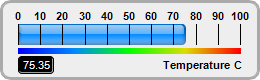
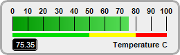
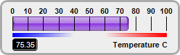
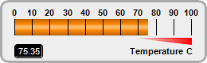
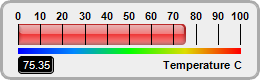
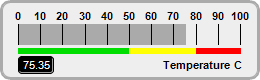

This example demonstrates horizontal bar meters in a white coloring scheme, and with bars in various shading styles.
ChartDirector 7.1 (C++ Edition)
White Horizontal Bar Meters






Source Code Listing
#include "chartdir.h"
void createChart(int chartIndex, const char *filename)
{
// The value to display on the meter
double value = 75.35;
// Create a LinearMeter object of size 260 x 80 pixels with very light grey (0xeeeeee)
// backgruond and a light grey (0xccccccc) 3-pixel thick rounded frame
LinearMeter* m = new LinearMeter(260, 80, 0xeeeeee, 0xaaaaaa);
m->setRoundedFrame(Chart::Transparent);
m->setThickFrame(3);
// Set the scale region top-left corner at (18, 24), with size of 222 x 20 pixels. The scale
// labels are located on the top (implies horizontal meter)
m->setMeter(18, 24, 222, 20, Chart::Top);
// Set meter scale from 0 - 100, with a tick every 10 units
m->setScale(0, 100, 10);
// Demostrate different types of color scales
double smoothColorScale[] = {0, 0x0000ff, 25, 0x0088ff, 50, 0x00ff00, 75, 0xdddd00, 100,
0xff0000};
const int smoothColorScale_size = (int)(sizeof(smoothColorScale)/sizeof(*smoothColorScale));
double stepColorScale[] = {0, 0x00dd00, 50, 0xffff00, 80, 0xff0000, 100};
const int stepColorScale_size = (int)(sizeof(stepColorScale)/sizeof(*stepColorScale));
double highLowColorScale[] = {0, 0x0000ff, 40, Chart::Transparent, 60, Chart::Transparent, 100,
0xff0000};
const int highLowColorScale_size = (int)(sizeof(highLowColorScale)/sizeof(*highLowColorScale));
double highColorScale[] = {70, Chart::Transparent, 100, 0xff0000};
const int highColorScale_size = (int)(sizeof(highColorScale)/sizeof(*highColorScale));
if (chartIndex == 0) {
// Add a blue (0x0088ff) bar from 0 to value with glass effect and 4 pixel rounded corners
m->addBar(0, value, 0x0088ff, Chart::glassEffect(Chart::NormalGlare, Chart::Top), 4);
// Add a 5-pixel thick smooth color scale at y = 48 (below the meter scale)
m->addColorScale(DoubleArray(smoothColorScale, smoothColorScale_size), 48, 5);
} else if (chartIndex == 1) {
// Add a green (0x00cc00) bar from 0 to value with bar lighting effect
m->addBar(0, value, 0x00cc00, Chart::barLighting());
// Add a 5-pixel thick step color scale at y = 48 (below the meter scale)
m->addColorScale(DoubleArray(stepColorScale, stepColorScale_size), 48, 5);
} else if (chartIndex == 2) {
// Add a purple (0x8833dd) bar from 0 to value with glass effect and 4 pixel rounded corners
m->addBar(0, value, 0x8833dd, Chart::glassEffect(Chart::NormalGlare, Chart::Top), 4);
// Add a 5-pixel thick high/low color scale at y = 48 (below the meter scale)
m->addColorScale(DoubleArray(highLowColorScale, highLowColorScale_size), 48, 5);
} else if (chartIndex == 3) {
// Add an orange (0xff8800) bar from 0 to value with cylinder lighting effect
m->addBar(0, value, 0xff8800, Chart::cylinderEffect());
// Add a high only color scale at y = 48 (below the meter scale) with thickness varying from
// 0 to 8
m->addColorScale(DoubleArray(highColorScale, highColorScale_size), 48, 0, 48, 8);
} else if (chartIndex == 4) {
// Add a red (0xee3333) bar from 0 to value with glass effect and 4 pixel rounded corners
m->addBar(0, value, 0xee3333, Chart::glassEffect(Chart::NormalGlare, Chart::Top), 4);
// Add a 5-pixel thick smooth color scale at y = 48 (below the meter scale)
m->addColorScale(DoubleArray(smoothColorScale, smoothColorScale_size), 48, 5);
} else {
// Add a grey (0xaaaaaa) bar from 0 to value
m->addBar(0, value, 0xaaaaaa);
// Add a 5-pixel thick step color scale at y = 48 (below the meter scale)
m->addColorScale(DoubleArray(stepColorScale, stepColorScale_size), 48, 5);
}
// Add a label right aligned to (243, 65) using 8pt Arial Bold font
m->addText(243, 65, "Temperature C", "Arial Bold", 8, Chart::TextColor, Chart::Right);
// Add a text box left aligned to (18, 65). Display the value using white (0xffffff) 8pt Arial
// Bold font on a black (0x000000) background with depressed rounded border.
TextBox* t = m->addText(18, 65, m->formatValue(value, "2"), "Arial", 8, 0xffffff, Chart::Left);
t->setBackground(0x000000, 0x000000, -1);
t->setRoundedCorners(3);
// Output the chart
m->makeChart(filename);
//free up resources
delete m;
}
int main(int argc, char *argv[])
{
createChart(0, "whitehbarmeter0.png");
createChart(1, "whitehbarmeter1.png");
createChart(2, "whitehbarmeter2.png");
createChart(3, "whitehbarmeter3.png");
createChart(4, "whitehbarmeter4.png");
createChart(5, "whitehbarmeter5.png");
return 0;
}